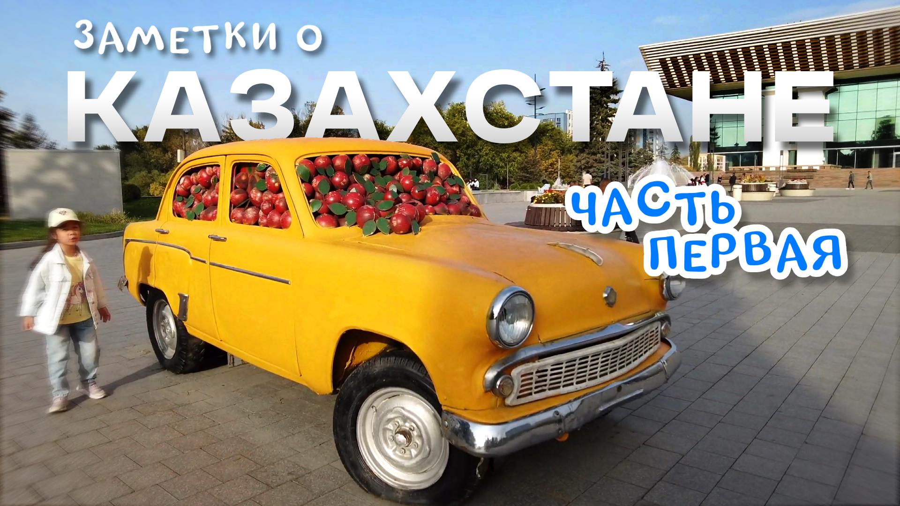
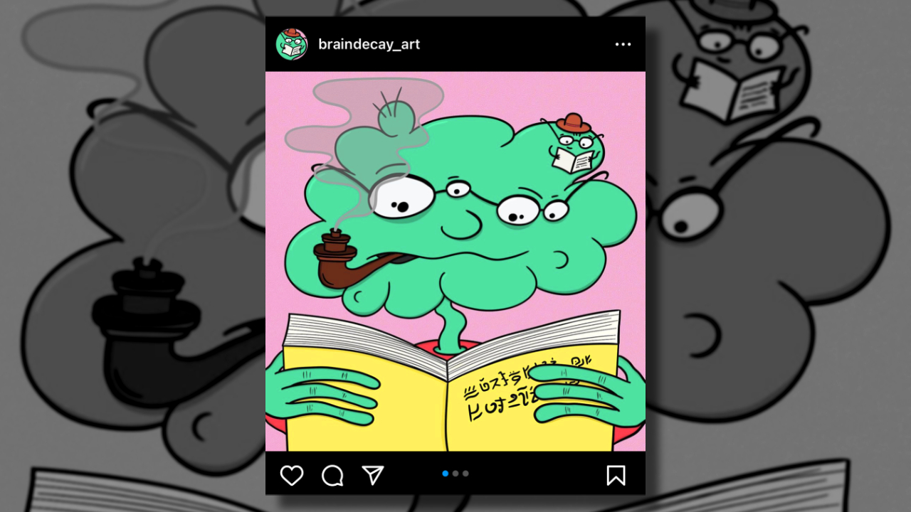

Привет
Меня зовут Денис Крумко, очень приятно :)
И так, вас каким-то образом занесло на мой сайт.
Предлагаю немного поскроллить страничку, и посмотреть, что у меня тут есть ⬇️
И так, вас каким-то образом занесло на мой сайт.
Предлагаю немного поскроллить страничку, и посмотреть, что у меня тут есть ⬇️
Например, я иногда снимаю и выкладываю...
видео
Путешествия там, обзоры иногда, про музыку и все такое.
Все видео стараюсь выкладывать на своем YouTube канале. Заходите, подписывайтесь ✌️

"Заметки о Казахстане" пока самое популярное видео :)
Все, что нельзя загружать на YouTube, я выкладываю на
Яндекс.Дзен 👀
Особое место в моем сердечке занимает
музыка
Да, я сочиняю музыку, но так вышло, что никуда ее пока не могу загрузить.
Есть мой старый канал Dendy Not Dead, но я туда уже ничего не добавляю.
Также накопилось прилично записей с репетиций, где мы играем каверы, все они есть на канале Polystra Music.
Также накопилось прилично записей с репетиций, где мы играем каверы, все они есть на канале Polystra Music.
А еще очень-очень редко я рисую
картинки
Будучи в Тайланде в начале 2022 года, я от скуки начал рисовать и выкладывать
своих смешных монстров в аккаунт braindecay_art в инстаграме. Опыта в рисовании, правда, у меня нет абсолютно никакого :)

Borgle and Little Spuff, 11 марта 2022
✨ На этом пока все ✨